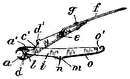
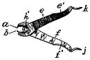

<!doctype html>

<html>

    <head>
        <meta charset="UTF-8">
        <link rel="stylesheet" type="text/css" href="../static/style.css">

        <title>US20090078278</title>
    </head>

    <body>

        <p class='scrolllinks top'>
            <a href='#end'>🡇</a>
        </p>

       
       <div class='boite_info'>
           
            <span class='patentnumber'>US20090078278</span>

            <span>
                
                    <span class='code_cpc'>
                        A45D34/041
                    </span>
                
                    <span class='code_cpc'>
                        A45D29/17
                    </span>
                
                    <span class='code_cpc'>
                        A45D29/02
                    </span>
                
                    <span class='code_cpc'>
                        A45D29/18
                    </span>
                
                    <span class='code_cpc'>
                        A45D29/16
                    </span>
                
                    <span class='code_cpc'>
                        A45D29/004
                    </span>
                
            </span>

            
            <h1> Multi-function nipper device </h1>
            <div class="date_line">
                <span class='date' title="March 26, 2009">2009</span>
                
                    <span class='inventor'>
                        Tran Christine
                         (US)
                    </span>
                
                <span class='assignee-list'>
                    
                        <span class='assignee'>
                            Tran Christine
                            
                        </span>
                    
                <span>
            </div>


       </div>

       
        <div class='boite_view'>

            <div class='figures'>
                
                
                    
                
                    
                
                    
                
                    
                
                    
                
                    
                
                    
                
                    
                
                
            </div>
            <div class='legende'>

                
                <ul>
                    
                        <li    >
                            <span class='legend_number'> 3</span>line
                        </li>
                    
                        <li    >
                            <span class='legend_number'> 4</span>line
                        </li>
                    
                        <li  class="non-consecutive"  >
                            <span class='legend_number'> 5</span>approximately
                        </li>
                    
                        <li  class="non-consecutive"  >
                            <span class='legend_number'> 7</span>approximately
                        </li>
                    
                        <li    >
                            <span class='legend_number'> 9</span>approximately
                        </li>
                    
                        <li    >
                            <span class='legend_number'> 10</span>improved nipper
                        </li>
                    
                        <li    >
                            <span class='legend_number'> 11</span>blade component
                        </li>
                    
                        <li    >
                            <span class='legend_number'> 12</span>handles
                        </li>
                    
                        <li  class="non-consecutive"  >
                            <span class='legend_number'> 13</span>second handle
                        </li>
                    
                        <li  class="non-consecutive"  >
                            <span class='legend_number'> 15</span>pivot point
                        </li>
                    
                        <li  class="non-consecutive"  >
                            <span class='legend_number'> 19</span>biasing member
                        </li>
                    
                        <li  class="non-consecutive"  >
                            <span class='legend_number'> 21</span>cuticle pusher
                        </li>
                    
                        <li    >
                            <span class='legend_number'> 30</span>end section
                        </li>
                    
                        <li    >
                            <span class='legend_number'> 31</span>cuticle pusher
                        </li>
                    
                        <li  class="non-consecutive"  >
                            <span class='legend_number'> 32</span>rounded head
                        </li>
                    
                        <li  class="non-consecutive"  >
                            <span class='legend_number'> 34</span>curved or slightly hook-like end
                        </li>
                    
                        <li  class="non-consecutive"  >
                            <span class='legend_number'> 36</span>slightly pointed end
                        </li>
                    
                        <li  class="non-consecutive"  >
                            <span class='legend_number'> 42</span>male extension
                        </li>
                    
                        <li    >
                            <span class='legend_number'> 44</span>nub
                        </li>
                    
                        <li    >
                            <span class='legend_number'> 45</span>guide slot
                        </li>
                    
                        <li  class="non-consecutive"  >
                            <span class='legend_number'> 46</span>male threading
                        </li>
                    
                        <li    >
                            <span class='legend_number'> 52</span>recess
                        </li>
                    
                        <li    >
                            <span class='legend_number'> 53</span>ledge
                        </li>
                    
                        <li    >
                            <span class='legend_number'> 54</span>detents
                        </li>
                    
                        <li    >
                            <span class='legend_number'> 55</span>corresponding apertures
                        </li>
                    
                        <li    >
                            <span class='legend_number'> 56</span>tab
                        </li>
                    
                        <li    >
                            <span class='legend_number'> 57</span>tab slot
                        </li>
                    
                        <li  class="non-consecutive"  >
                            <span class='legend_number'> 58</span>channel
                        </li>
                    
                        <li    >
                            <span class='legend_number'> 60</span>fingernail
                        </li>
                    
                        <li    >
                            <span class='legend_number'> 61</span>lunula
                        </li>
                    
                        <li    >
                            <span class='legend_number'> 62</span>nail body
                        </li>
                    
                        <li  class="non-consecutive"  >
                            <span class='legend_number'> 63</span>free edge
                        </li>
                    
                        <li    >
                            <span class='legend_number'> 70</span>finger
                        </li>
                    
                        <li  class="non-consecutive"  >
                            <span class='legend_number'> 71</span>cuticle
                        </li>
                    
                        <li    >
                            <span class='legend_number'> 90</span>approximately
                        </li>
                    
                </ul>
                
            </div>
            <div class='description'>
                <!-- <h4> Description </h4> -->
                <div class='description-text'>
                    
                        <h4> Abstract </h4>
                        <p> An manicuring nipper having a cutting head with first blade and a second blade, a first handle affixed to the first blade and a second handle affixed to the second blade, each handle being pivotably attached to the other at a pivot connection, and a cuticle pusher at a distal end of either handle and a nail cleaner at a distal end of the other handle wherein the cuticle pusher or the nail cleaner or both are removably attachable to their respective handle. </p>
                    

                    <h4> Description </h4>
                    
                    
                        <p> CROSS REFERENCES TO RELATED APPLICATIONS  </p>
                    
                        <p>        [0001]    None.  </p>
                    
                        <p>        STATEMENT REGARDING FEDERALLY-SPONSORED RESEARCH OR DEVELOPMENT  </p>
                    
                        <p>        [0002]    None.  </p>
                    
                        <p>        BACKGROUND  </p>
                    
                        <p>        [0003]    This improved manicuring device as set forth in this disclosure relates to an improvement in manicuring devices, and more particularly to an improved nipper which functions not only as a trimmer, but as a cuticle pusher, a nail cleaner, and an applicator for applying various patterns on fingernails such as, but not limited to, flower patterns, dots, hearts, raindrops, and the like.  </p>
                    
                        <p>          [0004]    The fingernail is an important skin appendage. It covers the dorsal surface of the terminal phalanges; i.e., the most distal bones of each finger and toe. Fingernails serve to protect the tips of the fingers and to assist in picking up small objects. They may be decorated or plain.  </p>
                    
                        <p>          [0005]    Fingernails are composed of laminated layers of a protein called keratin, which is also found in one&#39;s hair and skin. As a result, fingernails should be kept in good condition and clipped regularly in a rounded or squared shape.  </p>
                    
                        <p>          [0006]    Most of the fingernail is pink because of the underlying vascular tissue. The crescent-shaped half-moon-like white area at the bottom of the fingernail is the lunula. The lunula has a white-ish appearance because the vascular tissue under it does not show through. The lunula is the area in which new nail growth occurs.  </p>
                    
                        <p>          [0007]    The cuticle is just below the lunula and the nail body is above the lunula and is basically pinkish in color. The cuticle is the tissue that overlaps the lunula at the base of the fingernail. It serves as a barrier to keep bacteria from entering one&#39;s body and protects the new keratin cells that slowly emerge as the fingernail grows. Consequently, it is best to keep the cuticle where it is; but it also should be regularly groomed.  </p>
                    
                        <p>          [0008]    As the fingernail grows, it will extend beyond the fingertip. The part of the fingernail which extends beyond the fingertip is referred to as the free edge and it also is white-ish in color, or pinkish but not as pink as the nail body.  </p>
                    
                        <p>          [0009]    Basic care of the fingernail generally requires trimming of the free edge, cleaning under the free edge, and trimming of the cuticle. Before the cuticles may be properly trimmed, they first may generally be softened with a specialized cuticle cream, and then they should be slightly pushed back such that old or dead cuticle tissue will gather and then be more easy to cut. After this preliminary preparation, the cuticle is then trimmed carefully with a cuticle nipper.  </p>
                    
                        <p>          [0010]    Nail care devices for the proper trimming/grooming of the fingernail and cuticle generally include a [1] cuticle nipper; [2] a cuticle pusher; and [3] a nail cleaner for cleaning from under the free edge. In essence three separate devices which requires placing one device down to use another. Given the nature of the procedure, a user may have to alternate between pusher and trimmer several times and between cleaner and trimmer several times to ensure proper grooming has been realized.  </p>
                    
                        <p>          [0011]    A cuticle nipper is a scissor-like device with two opposing knife-like blades which, when pressed together, serve to cut and trim the cuticles and dead skin around the nails.  </p>
                    
                        <p>          [0012]    A cuticle pusher should first be used on the cuticle to push back and gather the distal cuticle. Pushers generally tend to be made of wood, plastic, or metal. They may also be used to push, but not cut, the cuticle back for a more even appearance. By pushing the skin back, one also reveals more of the half-moon shape of the lunula.  </p>
                    
                        <p>          [0013]    The nail cleaner is a device having a handle at one end and the cleaner portion at the other end. The cleaner portion can be flat and slightly pointed, may be flat and straight as a screwdriver head, may be flat and curved at the end, or may be pointed and have a rounded ball-like head or a rounded flat head, each of varying sizes, at the end of the distal point.  </p>
                    
                        <p>          [0014]    In any event, the cleaner portion is placed into the underside of the free edge, adjacent to the fingertip, pressed on the underside of the free edge, and translated from one side to the other to scrape and remove dirt and debris from the underside. The process may be repeated as necessary until the underside of the free edge is clean and white-like. The cleaner having the rounded end also may be used to create various patterns and designs on the fingernail [such as, but not limited to, flower patterns, dots, hearts, raindrops, and the like], as desired, when first dipped in a suitable polish, a water-based paint, or other solution before dabbing onto the polished nails.  </p>
                    
                        <p>          [0015]    The device of this present disclosure combines the elements of all these stand-alone prior art devices into a single device to thereby permit the user to be more effective and more efficient in the nail and cuticle trimming and grooming process. The single device eliminates the need to switch back and forth between the multiple devices. All the user needs to do with the device of this present disclosure is to rotate [or flip] it from one desired element to the next desired element.  </p>
                    
                        <p>          [0016]    All these elements in a single device also eliminates the frustration associated with the very possibility of misplacing one prior art device and then searching for it or a suitable replacement while in the middle of a trimming and grooming session. Additionally, with all these eliminates incorporated into a single device renders the cost of manufacture and cost to purchase substantially less than the cost of buying several stand-alone prior art devices.  </p>
                    
                        <p>          [0017]    The foregoing has outlined some of the more pertinent objects of the improved manicuring device as set forth in this disclosure. These objects should be construed to be merely illustrative of some of the more prominent features and applications of the improved manicuring device. Many other beneficial results can be attained by applying the disclosed improved manicuring device in a different manner or by modifying the improved manicuring device within the scope of the disclosure. Accordingly, other objects and a fuller understanding of the improved manicuring device as set forth in this disclosure may be had by referring to the summary of the improved manicuring device and the detailed description of the preferred embodiment in addition to the scope of the improved manicuring device defined by the claims taken in conjunction with the accompanying drawings.  </p>
                    
                        <p>        SUMMARY  </p>
                    
                        <p>        [0018]    The above-noted problems, among others, are overcome by the improved manicuring device as set forth in this disclosure. Briefly stated, the improved manicuring device contemplates a manicuring nipper having a cutting head with first blade and a second blade and a first handle affixed to the first blade and a second handle affixed to the second blade, each of which are pivotably attached to each other at a pivot connection for opening and closing the cutting head for cutting, and a cuticle pusher at a distal end of either handle and a nail cleaner at a distal end of the other handle.  </p>
                    
                        <p>          [0019]    Either or both handles are of a two-piece construction wherein the cuticle pusher or the nail cleaner or both are removable, inter-changeable, and replaceable with a like-fitting external object preferably with an object suited for nail care.  </p>
                    
                        <p>          [0020]    The foregoing has outlined the more pertinent and important features of the improved manicuring device as set forth in this disclosure in order that the detailed description that follows may be better understood so the present contributions to the art may be more fully appreciated. Additional features of the improved manicuring device will be described hereinafter which form the subject of the claims. It should be appreciated by those skilled in the art that the conception and the disclosed specific embodiment may be readily utilized as a basis for modifying or designing other structures and methods for carrying out the same purposes of the improved manicuring device as set forth in this disclosure. It also should be realized by those skilled in the art that such equivalent constructions and methods do not depart from the spirit and scope of the improved manicuring device as set forth in the appended claims.  </p>
                    
                        <p>       </p>
                    
                        <p>      </p>
                    
                        <p>       </p>
                    
                        <p>        BRIEF DESCRIPTION OF THE DRAWINGS  </p>
                    
                        <p>          [0021]    For a fuller understanding of the nature and objects of the improved manicuring device as set forth in this disclosure, reference should be had to the following detailed description taken in conjunction with the accompanying drawings in which:  </p>
                    
                        <p>            [0022]      FIG. 1  is a detailed front elevation view of a fingernail.  </p>
                    
                        <p>            [0023]      FIG. 2  is a perspective view of the multi-function nipper.  </p>
                    
                        <p>            [0024]      FIG. 3 , as taken on <span class="highlightfromlegend legenditem3">line  3</span> - 3  of  FIG. 2 , is a detailed view of the handle of the multi-function nipper.  </p>
                    
                        <p>            [0025]      FIG. 4 , as taken on <span class="highlightfromlegend legenditem4">line  4</span> - 4  of  FIG. 3 , is an end view of the handle of the multi-function nipper.  </p>
                    
                        <p>            [0026]      FIG. 5  is one embodiment of a removable end section of a handle illustrating a snap-fit.  </p>
                    
                        <p>            [0027]      FIG. 6  is another embodiment of a removable end section of a handle illustrating a friction-fit.  </p>
                    
                        <p>            [0028]      FIG. 7  is another embodiment of a removable end section of a handle illustrating a threaded-fit.  </p>
                    
                        <p>            [0029]      FIG. 8  is another embodiment of a removable end section of a handle illustrating a bayonet-fit.  </p>
                    
                        <p>         </p>
                    
                        <p>      </p>
                    
                        <p>      </p>
                    
                        <p>      DETAILED DESCRIPTION  </p>
                    
                        <p>        [0030]    Referring now to the drawings in detail and in particular to  FIGS. 1 through 4 , <span class="highlightfromlegend legenditem10">reference character  10</span>  of  FIG. 2  generally designates an improved manicuring nipper constructed in accordance with a preferred embodiment thereof.  </p>
                    
                        <p>          [0031]      FIG. 1  is illustrative of a <span class="highlightfromlegend legenditem70">human finger  70</span>  having a <span class="highlightfromlegend legenditem71">cuticle  71</span>  and <span class="highlightfromlegend legenditem60">fingernail  60</span> . The <span class="highlightfromlegend legenditem60">fingernail  60</span>  consists of, from the <span class="highlightfromlegend legenditem71">cuticle  71</span>  up, the <span class="highlightfromlegend legenditem61">lunula  61</span>  [moon-like white section], the <span class="highlightfromlegend legenditem62">nail body  62</span>  [pinkish section], and the <span class="highlightfromlegend legenditem63">free edge  63</span>  [the basically white-like in color distal end grown out from the distal end of the <span class="highlightfromlegend legenditem70">finger  70</span> ].  </p>
                    
                        <p>          [0032]    A conventional prior-art manicuring nipper is generally not unlike the basic structure of the <span class="highlightfromlegend legenditem10">improved nipper  10</span>  illustrated in  FIG. 2  except for the unique distal handle ends of the <span class="highlightfromlegend legenditem10">improved nipper  10</span> . Consequently,  FIG. 2  will be used to describe a prior-art nipper. A prior-art nipper has a <span class="highlightfromlegend legenditem11">cutting head  11</span>  with a <span class="highlightfromlegend legenditem11">first blade component  11</span> B and a <span class="highlightfromlegend legenditem11">second blade component  11</span> A and a <span class="highlightfromlegend legenditem12">first handle  12</span>  and a <span class="highlightfromlegend legenditem13">second handle  13</span>  attached to <span class="highlightfromlegend legenditem11">each blade component  11</span> A,  11 B. The <span class="highlightfromlegend legenditem12">handles  12</span> ,  13  are pivotably connected to one another at a <span class="highlightfromlegend legenditem15">pivot point  15</span>  by a conventional connection member.  </p>
                    
                        <p>          [0033]    A conventional nipper also may have a <span class="highlightfromlegend legenditem19">biasing member  19</span>  between the <span class="highlightfromlegend legenditem12">two handles  12</span> ,  13  exerting outward force on the <span class="highlightfromlegend legenditem12">handles  12</span> ,  13  to force the <span class="highlightfromlegend legenditem11">blades  11</span> A,  11 B of the <span class="highlightfromlegend legenditem11">cutting head  11</span>  open after each cut has been made. A user typically would use the nipper to cut a person&#39;s cuticle and, either before of after such cut, would use another implement [a conventional cuticle pusher, not shown] to push the <span class="highlightfromlegend legenditem71">cuticle  71</span>  downward from the <span class="highlightfromlegend legenditem61">lunula  61</span>  to facilitate the initial cut or follow-on cuts or for greater exposure of the <span class="highlightfromlegend legenditem61">lunula  61</span> . The distal end of a typical cuticle pusher is curved to accommodate the curvilinear nature of one&#39;s fingernails.  </p>
                    
                        <p>          [0034]    In a typical manicure the user would also clean the underside of a <span class="highlightfromlegend legenditem63">person&#39;s free edge  63</span>  using yet another implement, a flat or rounded nail cleaner [similar to that shown in  FIGS. 2 and 8  on <span class="highlightfromlegend legenditem30">respective handles  30</span> A,  30 D] as desired, to do so. The round-head cleaner may be a ball shape or a rounded flat shape like a pancake. In essence therefore three different implements are required in this process.  </p>
                    
                        <p>          [0035]    The <span class="highlightfromlegend legenditem12">handles  12</span> ,  13  of this <span class="highlightfromlegend legenditem10">improved nipper  10</span>  are unique and provide for the ease of use and flexibility of use necessary to eliminate the frustrations associated with using more than one manicuring device when performing a trimming/grooming function on a <span class="highlightfromlegend legenditem60">person&#3<span class="highlightfromlegend legenditem71">9;s fingernails  60</span>  or cuticles  71</span>  or both.  </p>
                    
                        <p>          [0036]    The <span class="highlightfromlegend legenditem10">present improved nipper  10</span>  is a <span class="highlightfromlegend legenditem10">multi-function nipper  10</span>  having a <span class="highlightfromlegend legenditem21">cuticle pusher  21</span>  integrally connected to a <span class="highlightfromlegend legenditem12">first handle  12</span>  and a <span class="highlightfromlegend legenditem32">free edge cleaner  32</span>  integrally, or removably, connected to the <span class="highlightfromlegend legenditem13">second handle  13</span> . If removably connected, an <span class="highlightfromlegend legenditem30">end section  30</span> A below a middle section of the <span class="highlightfromlegend legenditem13">second handle  13</span> , is removable from the middle section.  </p>
                    
                        <p>          [0037]      FIGS. 3 and 4  illustrate typical curvatures of cuticle pushers. The <span class="highlightfromlegend legenditem12">first handle  12</span>  is relatively straight from the <span class="highlightfromlegend legenditem15">pivot point  15</span>  down and curves at its distal end. Such curvature may be toward the <span class="highlightfromlegend legenditem13">second handle  13</span>  or away from the <span class="highlightfromlegend legenditem13">second handle  13</span> . The second handle has a more curvilinear structure.  </p>
                    
                        <p>          [0038]    As illustrated in  FIG. 2 , attached to the <span class="highlightfromlegend legenditem13">second handle  13</span>  is a free edge cleaner having a <span class="highlightfromlegend legenditem32">rounded head  32</span> . The <span class="highlightfromlegend legenditem32">head  32</span>  may vary in size from small to medium to large depending on the amount of cleaning required of the underside of the <span class="highlightfromlegend legenditem63">free edge  63</span>  and the size of the <span class="highlightfromlegend legenditem63">free edge  63</span>  involved. The rounded head may be ball-like as illustrated in  FIG. 2  or may be round and flat like a pancake.  </p>
                    
                        <p>          [0039]    The <span class="highlightfromlegend legenditem32">rounded head  32</span> , whether ball-like or flat, may also function as an applicator to apply a polish, a water-based paint, or other solution by dabbing onto a <span class="highlightfromlegend legenditem60">finished fingernail  60</span>  to create a flower-like or other design on the <span class="highlightfromlegend legenditem60">fingernail  60</span> . The size of the <span class="highlightfromlegend legenditem32">rounded head  32</span>  would vary depending on the pattern, design, and size desired.  </p>
                    
                        <p>          [0040]    Referring to  FIGS. 5 through 6 , an alternative free edge cleaner may have a relatively flat and <span class="highlightfromlegend legenditem36">slightly pointed end  36</span>  or may have a relatively flat and <span class="highlightfromlegend legenditem34">curved or slightly hook-like end  34</span> . Any alternative free edge cleaner may be integrally connected to the <span class="highlightfromlegend legenditem13">handle  13</span>  or may be removably connected thereto. As illustrated in  FIG. 7 , a <span class="highlightfromlegend legenditem31">cuticle pusher  31</span>  may be at the distal end of the <span class="highlightfromlegend legenditem30">removable end section  30</span> C.  </p>
                    
                        <p>          [0041]    <span class="highlightfromlegend legenditem12">In instances where one or both handles  12</span> ,  13  have removable end sections, <span class="highlightfromlegend legenditem30">such removable end section  30</span> C may be a conventional corr<span class="highlightfromlegend legenditem46">esponding threaded connection structure  46</span>  [ FIG. 6 ], may be a conve<span class="highlightfromlegend legenditem42">ntional male-to-female fr<span class="highlightfromlegend legenditem30">iction-fitting  42</span>  [end section  30</span> B of  FIG. 5 ], twist-off bayonet fitting having a <span class="highlightfromlegend legenditem44">nub or detent  44</span>  and <span class="highlightfromlegend legenditem45">corr<span class="highlightfromlegend legenditem30">esponding slot  45</span>  [end section  30</span> D of  FIG. 8 ], or a snap-type fitting with <span class="highlightfromlegend legenditem55">corresponding apertures  55</span>  and <span class="highlightfromlegend legenditem54">detents<span class="highlightfromlegend legenditem30">  54</span>  [end section  30</span> A of  FIG. 5 ].  </p>
                    
                        <p>          [0042]    The <span class="highlightfromlegend legenditem30">end section  30</span> A of the snap-type fitting illustrated in  FIG. 5  has a <span class="highlightfromlegend legenditem56">registration tab  56</span>  which registers with a <span class="highlightfromlegend legenditem57">corresponding tab slot  57</span>  in the <span class="highlightfromlegend legenditem13">second handle  13</span> . The <span class="highlightfromlegend legenditem30">end section  30</span> A is moved in the direction of Arrow A <span class="highlightfromlegend legenditem56">for tab  56</span>  to register with <span class="highlightfromlegend legenditem57">tab slot  57</span>  after which the <span class="highlightfromlegend legenditem30">end section  30</span> A is moved in the direction of Arrow B. <span class="highlightfromlegend legenditem53">Ledge  53</span>  on the <span class="highlightfromlegend legenditem30">end section  30</span> A mates with <span class="highlightfromlegend legenditem52">recess  52</span>  on the <span class="highlightfromlegend legenditem13">second handle  13</span>  and <span class="highlightfromlegend legenditem54">detents  54</span>  on the <span class="highlightfromlegend legenditem13">second handle  13</span>  in the recess mate with <span class="highlightfromlegend legenditem55">corresponding apertures  55</span>  on the <span class="highlightfromlegend legenditem30">end section  30</span> A.  </p>
                    
                        <p>          [0043]    It must be understand that the location of the <span class="highlightfromlegend legenditem54">detents  54</span>  and <span class="highlightfromlegend legenditem55">respective mating apertures  55</span>  may be inverted; i.e., <span class="highlightfromlegend legenditem54">detents  54</span>  on the <span class="highlightfromlegend legenditem30">end section  30</span> A and <span class="highlightfromlegend legenditem55">apertures  55</span>  in the <span class="highlightfromlegend legenditem52">recess  52</span>  of the <span class="highlightfromlegend legenditem13">second handle  13</span> . A <span class="highlightfromlegend legenditem58">channel  58</span>  in the <span class="highlightfromlegend legenditem52">recess  52</span>  eases the snapping on or off of the <span class="highlightfromlegend legenditem30">end section  30</span> A with respect to the <span class="highlightfromlegend legenditem13">second handle  13</span> .  </p>
                    
                        <p>          [0044]      FIG. 6  illustrates an <span class="highlightfromlegend legenditem30">end section  30</span> B in a friction-fit relationship with the <span class="highlightfromlegend legenditem13">second handle  13</span> . The <span class="highlightfromlegend legenditem42">male extension  42</span>  is angled slightly to fit into the receiving opening [not shown] of the <span class="highlightfromlegend legenditem13">second handle  13</span>  and be held in place thereat. Suitable angling for this purpose is<span class="highlightfromlegend legenditem5"> approximately 5</span>° to<span class="highlightfromlegend legenditem9"> approximately 9</span>°, with<span class="highlightfromlegend legenditem7"> approximately 7</span>° being optimal. It must be understood that the <span class="highlightfromlegend legenditem42">male extension  42</span>  may be on the <span class="highlightfromlegend legenditem13">second handle  13</span>  and the opening on the <span class="highlightfromlegend legenditem30">end section  30</span> B.  </p>
                    
                        <p>          [0045]      FIG. 7  illustrates an <span class="highlightfromlegend legenditem30">end section  30</span> C in a threaded-fit relationship with the <span class="highlightfromlegend legenditem13">second handle  13</span> . The <span class="highlightfromlegend legenditem46">male threading  46</span>  is on the <span class="highlightfromlegend legenditem30">end section  30</span> C and will thread into the receiving threaded opening [not shown] of the <span class="highlightfromlegend legenditem13">second handle  13</span>  and be held in place thereat. It must be understood that the <span class="highlightfromlegend legenditem46">male threading  46</span>  may be on the <span class="highlightfromlegend legenditem13">second handle  13</span>  and the threaded opening on the <span class="highlightfromlegend legenditem30">end section  30</span> C.  </p>
                    
                        <p>          [0046]      FIG. 8  illustrates an <span class="highlightfromlegend legenditem30">end section  30</span> D in a bayonet-fitting relationship with the <span class="highlightfromlegend legenditem13">second handle  13</span> . The <span class="highlightfromlegend legenditem30">end section  30</span> D has a <span class="highlightfromlegend legenditem44">nub  44</span<span class="highlightfromlegend legenditem45">>  thereon which slides into guide slot  45</span>  on the <span class="highlightfromlegend legenditem13">second handle  13</span>  and twists into it at a<span class="highlightfromlegend legenditem90"> approximately 90</span>° for a firm fit and hold. It must be understood that the <span class="highlightfromlegend legenditem44">nub  44</span>  may be on the <span class="highlightfromlegend legenditem13">second handle  13</span>  and the <span class="highlightfromlegend legenditem45">guide slot  45</span>  on the <span class="highlightfromlegend legenditem30">end section  30</span> D.  </p>
                    
                        <p>          [0047]    It must also be noted and understood that though the removability of end sections related to the <span class="highlightfromlegend legenditem13">second handle  13</span> , the <span class="highlightfromlegend legenditem12">first handle  12</span>  may be structured similarly.  </p>
                    
                        <p>          [0048]    The present disclosure includes that contained in the present claims as well as that of the foregoing description. Although this improved manicuring device has been described in its preferred forms with a certain degree of particularity, it is understood that the present disclosure of the preferred forms has been made only by way of example and numerous changes in the details of construction and combination and arrangement of parts and method steps may be resorted to without departing from the spirit and scope of the improved manicuring device as set forth in this disclosure. Accordingly, the scope of the improved manicuring device should be determined not by the embodiments illustrated, but by the appended claims and their legal equivalents.  </p>
                    
                        <p>          [0049]    Applicant has attempted to disclose all the embodiments of the improved manicuring device that could be reasonably foreseen. It must be understood, however, that there may be unforeseeable insubstantial modifications to improved manicuring device as set forth in this disclosure that remain as equivalents and thereby falling within the scope of the improved manicuring device. </p>
                    
                </div>
            </div>
        </div>


        <div class='citations'>
            <h4>Brevets cités</h4>
            <div class='listcited'>
                
                
                    <a href="US766859.html" class='citedlinkbox'>
                        <div class='citedimgwrapper'>
                            
                            
                            
                        </div>
                        <div class='citedinfowrapper'>
                            <h5>Manicure-tool</h5>
                            <div><span class='date'>1904</span>
                            <span class='inventor'>Wilcox Henry</span></div>
                        </div>
                    </a>
                
                    <a href="US770032.html" class='citedlinkbox'>
                        <div class='citedimgwrapper'>
                            
                            
                            
                        </div>
                        <div class='citedinfowrapper'>
                            <h5>Manicure nail-clipper</h5>
                            <div><span class='date'>1904</span>
                            <span class='inventor'>Wilcox Henry</span></div>
                        </div>
                    </a>
                
                    <a href="US806037.html" class='citedlinkbox'>
                        <div class='citedimgwrapper'>
                            
                            
                            
                        </div>
                        <div class='citedinfowrapper'>
                            <h5>Nail-clipper or wire-cutter</h5>
                            <div><span class='date'>1905</span>
                            <span class='inventor'>Wilcox Henry</span></div>
                        </div>
                    </a>
                
                    <a href="US1428396.html" class='citedlinkbox'>
                        <div class='citedimgwrapper'>
                            
                            
                            
                        </div>
                        <div class='citedinfowrapper'>
                            <h5>Manicuring instrument</h5>
                            <div><span class='date'>1922</span>
                            <span class='inventor'>Pozdeck Adolph F.</span></div>
                        </div>
                    </a>
                
                    <a href="US2762380.html" class='citedlinkbox'>
                        <div class='citedimgwrapper'>
                            
                            
                            
                        </div>
                        <div class='citedinfowrapper'>
                            <h5>Combination tool</h5>
                            <div><span class='date'>1956</span>
                            <span class='inventor'>Daisy Strickland</span></div>
                        </div>
                    </a>
                
                    <a href="US3315354.html" class='citedlinkbox'>
                        <div class='citedimgwrapper'>
                            
                            
                            
                        </div>
                        <div class='citedinfowrapper'>
                            <h5>Combined fingernail and cuticle clipper</h5>
                            <div><span class='date'>1967</span>
                            <span class='inventor'>Oates Jr. David J.</span></div>
                        </div>
                    </a>
                
            </div>

            <h4>Brevets citants</h4>
            <div class='listcitedby'>
                
                
                    <a href="US20150282586.html" class='citedlinkbox'>
                        <div class='citedimgwrapper'>
                            
                            
                            
                        </div>
                        <div class='citedinfowrapper'>
                            <h5>Hand-tool grips</h5>
                            <div><span class='date'>2015</span>
                            <span class='inventor'>Bailey Timothy</span></div>
                        </div>
                    </a>
                
            </div>
        </div>

        <p class='navlinks'>
            <a href="https://www.google.com/patents/US20090078278">google patent 🔗</a>
            <a href='/'>back to the list 🡄</a>
        </p>

        <p class='scrolllinks end'>
            <a name="end" href='#top'> 🡅 </a>
        </p>
    </body>

</html>